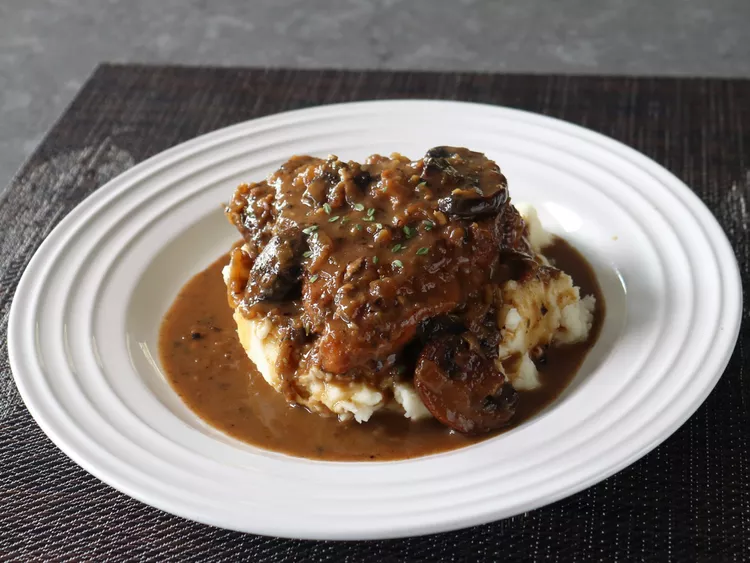

World's Best Lasagna

Description
Like many other chefs my age, I heard about "fricasseeing" years before even thinking about going to culinary school. It wasn't Julia Child, or the Galloping Gourmet, but rather a much more important cultural, and social phenomenon, Looney Tunes. That's right; Buggy's Bunny turned me on to fricassee.
In that fateful episode, it was a rabbit fricassee being discussed, and whether or not a special hunting permit was necessary to "harvest" the meat for this delicious stew recipe. I won't say anymore, so as not to spoil the ending, just in case you're just now getting in to very old cartoons, but that's how and when this fun to say, and even more fun to eat, word entered by brain.
"Fricassee" is a generic culinary term that refers to meat stewed in a pan, usually with wine, after being very well browned first. It's a perfect way to cook rabbit, or a tough old chicken, and can be adapted a hundred different ways. I love this version, but I invite you to play around with any and all of the ingredients. Just make sure you have the right hunting permit if you're not going to get your chicken, or rabbit, from the store. Enjoy!
Ingredients
- 6 bone-in, skin-on chicken thighs
- 2 teaspoons kosher salt, more to taste
- 1 tablespoon vegetable oil
- 2 cups thickly sliced fresh mushrooms
- 1 cup diced yellow onion
- 1/2 cup sliced shallots
- 2 cloves garlic, minced
- 1/2 teaspoon black pepper
- 1 pinch cayenne
- 2 teaspoons all-purpose flour
- 1-1/2 cups white wine
- 6 sprigs thyme
- 1 cup chicken broth
- 1/2 cup heavy cream
Steps
- Season chicken thighs with salt on both sides.
- Heat vegetable oil in a skillet over medium-high heat and place chicken skin-side-down into the hot oil. Cook until there is a good sear and fat is rendered, about 5 minutes. Flip and cook the other side until seared as well, about 2 minutes. Set aside.
- Leave 2 tablespoons of the rendered fat in the pan and add sliced mushrooms. Cook until browned, 5 to 8 minutes. Add onion, shallots, and garlic and cook, stirring occasionally, until onions are soft and translucent, about 5 minutes. Season with pepper and cayenne and stir in flour to thicken the mixture, about 1 minute.
- Pour in white wine and cook, stirring, until alcohol has evaporated. Raise the heat to high and keep cooking until sauce has reduced to half, 3 to 5 minutes.
- Add chicken broth, thyme, and bay leaf and bring to a boil over high heat. Reduce heat to medium-lo and add chicken and any accumulated juices back into the skillet, skin side up. Cover and simmer gently for 45 minutes, turning over thighs halfway through.
- Remove lid and turn thighs back to skin side up. Continue to simmer uncovered, basting occasionally, until chicken is tender and sauce reduces even more. If the pan gets dry before the chicken is tender, add some more water or broth.
- Add cream and simmer until sauce reaches desired thickness. Heat can be raised to medium to reduce cream faster if chicken is already tender. Sauce can be served thin and runny, or reduced to a thick sauce. Sprinkle with fresh thyme and serve.